![]()
Ⅰ. 前回の振り返り
1. 前回の「授業の感想」
- 別紙参照
Ⅱ. プレゼンテーション
Ⅲ. マップ（階級区分図）
1. 定義と問題点
階級区分図 > 階級区分図は興味のある変数の値を元に地理的な領域の等級分けを行い､色や陰影の違いを表現する図です（教科書 248ページ）
-
注意点
- 空間を色分けすることが適切かどうか
- 例：アメリカ大統領選挙（州単位の色分け）
- 選挙は有権者数（投票者数）が重要であって､空間（大きさ､小ささ）に意味はない
- ➡ 見る者に誤ったインパクトを与える
- ➡ 階級区分図は不適切に用いると誤解を招きやすい
- 例：アメリカ大統領選挙（州単位の色分け）
- 空間を色分けすることが適切かどうか
2. アメリカ合衆国の週単位での地図
⑴ データの確認
election %>%
select(state, total_vote, r_points, pct_trump, party, census) %>%
slice_sample(n = 5)# A tibble: 5 × 6
state total_vote r_points pct_trump party census
<chr> <dbl> <dbl> <dbl> <chr> <chr>
1 West Virginia 721233 41.7 67.8 Republican South
2 District of Columbia 311268 -86.8 4.09 Democratic South
3 Massachusetts 3325046 -27.2 32.8 Democratic Northeast
4 Hawaii 428937 -32.2 30.0 Democratic West
5 New Jersey 3906723 -14.0 41 Democratic Northeast⑵ 傾向の把握
# アメリカ主要政党のカラーコード
party_colors <- c("#2E74C0", "#CB454A")
election %>%
filter(!st == "DC") %>%
ggplot(aes(x = r_points,
y = reorder(state, r_points),
color = party)) +
geom_vline(xintercept = 0, color = "gray30") +
geom_point(sizse = 2) +
scale_color_manual(values = party_colors) +
scale_x_continuous(breaks = c(-30, -20, -10, 0, 10, 20, 30, 40),
labels = c("30\n(Clinton)", "20", "10", "0", "10", "20", "30", "40\n(Trump)")) +
facet_wrap(~ census, ncol = 1, scales = "free_y") +
guides(color = "none") +
labs(x = "Point Margin", y = "") +
theme(axis.text = element_text(size = 8))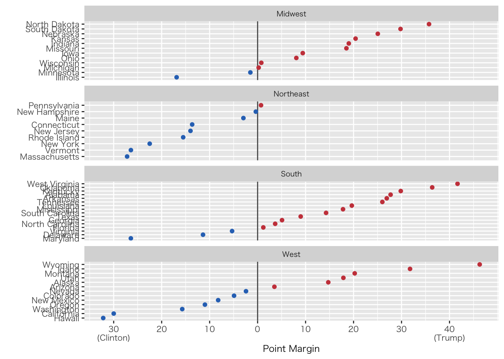
⑶ マップの作成
事前準備
- maps()関数を読み込む（libraryに追加）
- データフレームの作成（と確認）
us_states <- map_data("state")
us_states %>% head() long lat group order region subregion
1 -87.46201 30.38968 1 1 alabama <NA>
2 -87.48493 30.37249 1 2 alabama <NA>
3 -87.52503 30.37249 1 3 alabama <NA>
4 -87.53076 30.33239 1 4 alabama <NA>
5 -87.57087 30.32665 1 5 alabama <NA>
6 -87.58806 30.32665 1 6 alabama <NA>白地図
us_states %>%
ggplot(aes(x = long, y = lat, group = group)) +
geom_polygon(fill = "white", color = "black")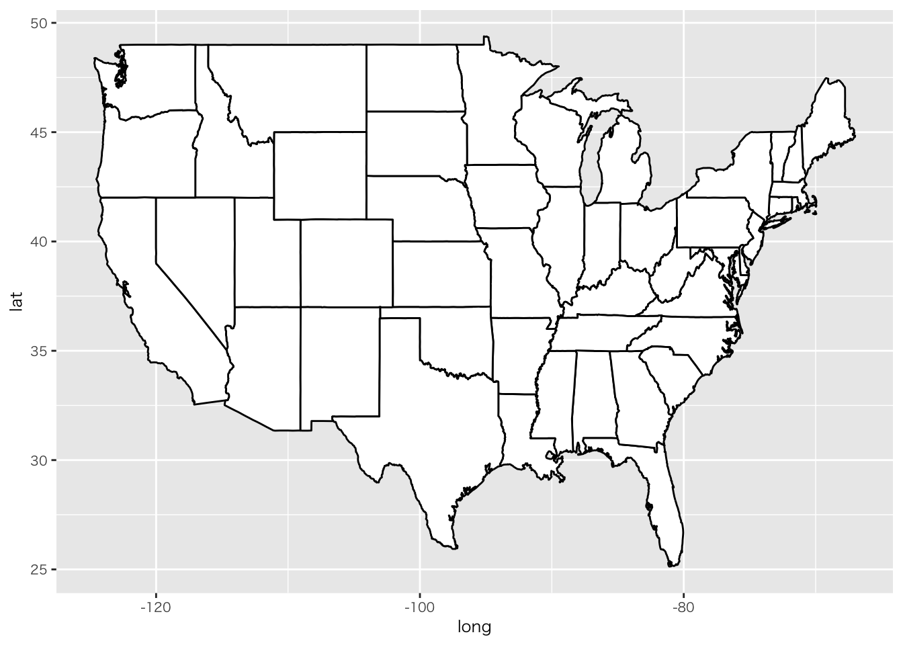
色分け地図（州単位）
us_states %>%
ggplot(aes(x = long, y = lat, group = group, fill = region)) +
geom_polygon(color = "gray90", size = 0.1) +
guides(fill = "none")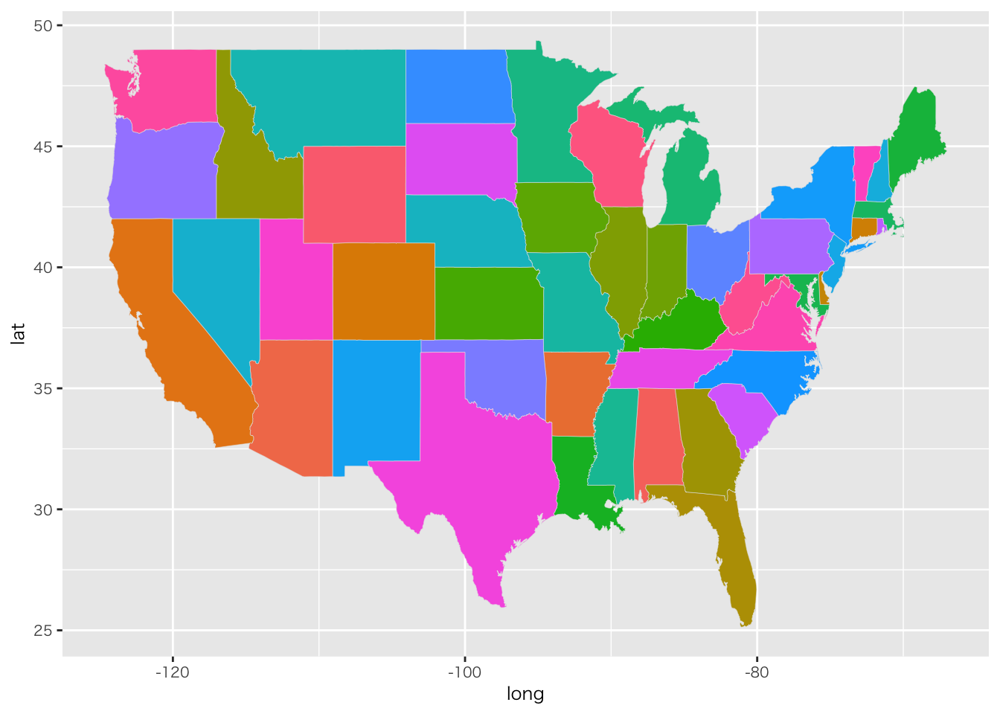
色分け地図（大統領選挙）
データの加工
us_state_elec <- election %>%
mutate(region = tolower(state)) %>%
left_join(us_states, by = "region")
us_state_elec %>% head()# A tibble: 6 × 28
state st fips total_vote vote_margin winner party pct_margin r_points
<chr> <chr> <dbl> <dbl> <dbl> <chr> <chr> <dbl> <dbl>
1 Alabama AL 1 2123372 588708 Trump Republi… 0.277 27.7
2 Alabama AL 1 2123372 588708 Trump Republi… 0.277 27.7
3 Alabama AL 1 2123372 588708 Trump Republi… 0.277 27.7
4 Alabama AL 1 2123372 588708 Trump Republi… 0.277 27.7
5 Alabama AL 1 2123372 588708 Trump Republi… 0.277 27.7
6 Alabama AL 1 2123372 588708 Trump Republi… 0.277 27.7
# ℹ 19 more variables: d_points <dbl>, pct_clinton <dbl>, pct_trump <dbl>,
# pct_johnson <dbl>, pct_other <dbl>, clinton_vote <dbl>, trump_vote <dbl>,
# johnson_vote <dbl>, other_vote <dbl>, ev_dem <dbl>, ev_rep <dbl>,
# ev_oth <dbl>, census <chr>, region <chr>, long <dbl>, lat <dbl>,
# group <dbl>, order <int>, subregion <chr>作図
us_state_elec %>%
ggplot(aes(x = long, y = lat, group = group, fill = party)) +
geom_polygon(color = "gray90", size = 0.1) +
coord_map(projection = "albers", lat0 = 39, lat1 = 45) +
scale_fill_manual(values = party_colors) +
labs(title = "アメリカ大統領選挙結果 2016", fill = NULL) +
theme_map(base_family = "HiraKakuProN-W3")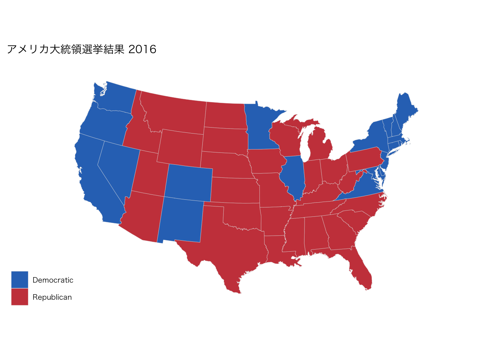
us_state_elec %>%
ggplot(aes(x = long, y = lat, group = group, fill = pct_trump)) +
geom_polygon(color = "gray90", size = 0.1) +
coord_map(projection = "albers", lat0 = 39, lat1 = 45) +
scale_fill_gradient(low = "white", high = "#CB454A") +
labs(title = "アメリカ大統領選挙結果 2016 トランプ得票率", fill = NULL) +
theme_map(base_family = "HiraKakuProN-W3")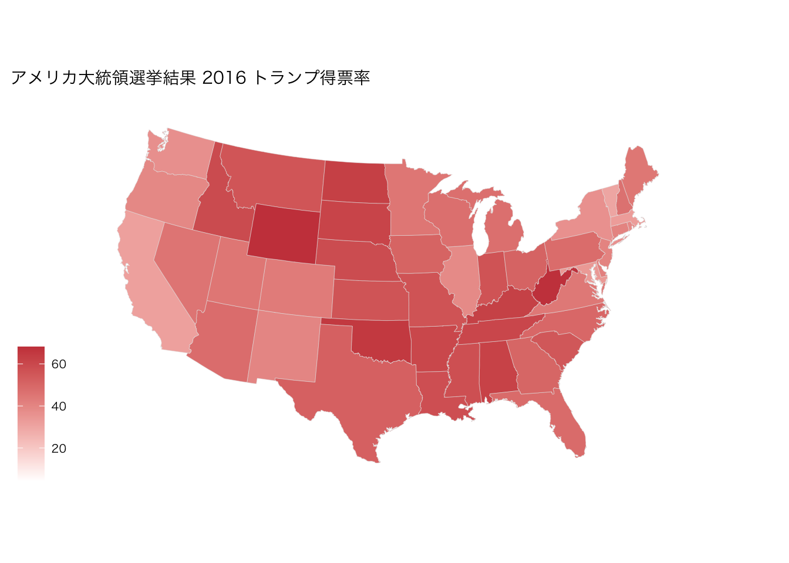
3. 日本の地図
⑴ 事前準備
- パッケージのインストールと読み込み
library(sf)
library(NipponMap)
library(jpndistrict)
library(rnaturalearth)
library(rnaturalearthdata)
library(rnaturalearthhires)⑵ 作図
シンプルな日本地図
geom_sfは地理空間データを標準化された形式で扱うためのRパッケージです。geom_polygonに比べ､より高度な地理空間データを可視化できます
df_japan_map <- ne_states(country = "Japan", returnclass = "sf") # 日本の地図データを取得
df_japan_map <-
df_japan_map %>%
mutate(
name_local = if_else(name == "Shizuoka", "静岡県", name_local)
) #元データに静岡県が入っていない（入力漏れ？）ためデータ加工
df_japan_map %>%
ggplot() +
geom_sf() +
theme_void()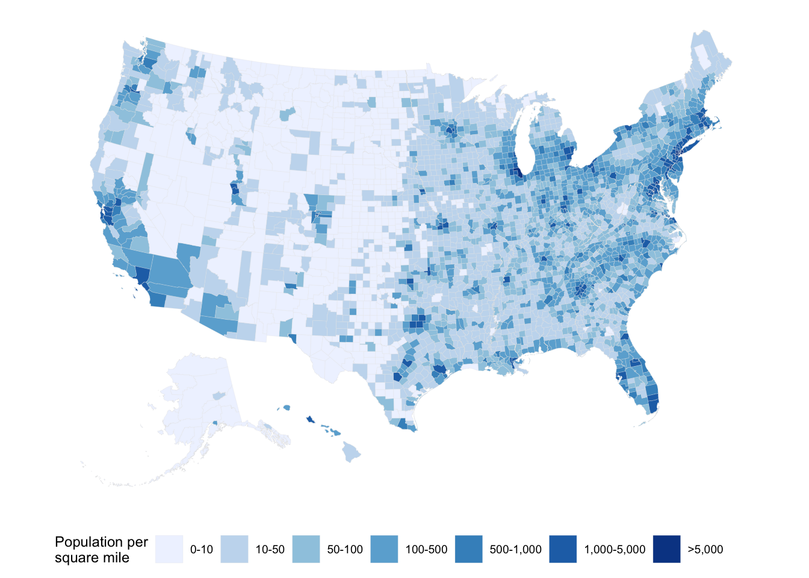
df_india_map <- ne_states(country = "India", returnclass = "sf") # 各国の地理データを持つ
df_india_map %>%
ggplot() +
geom_sf() +
theme_map()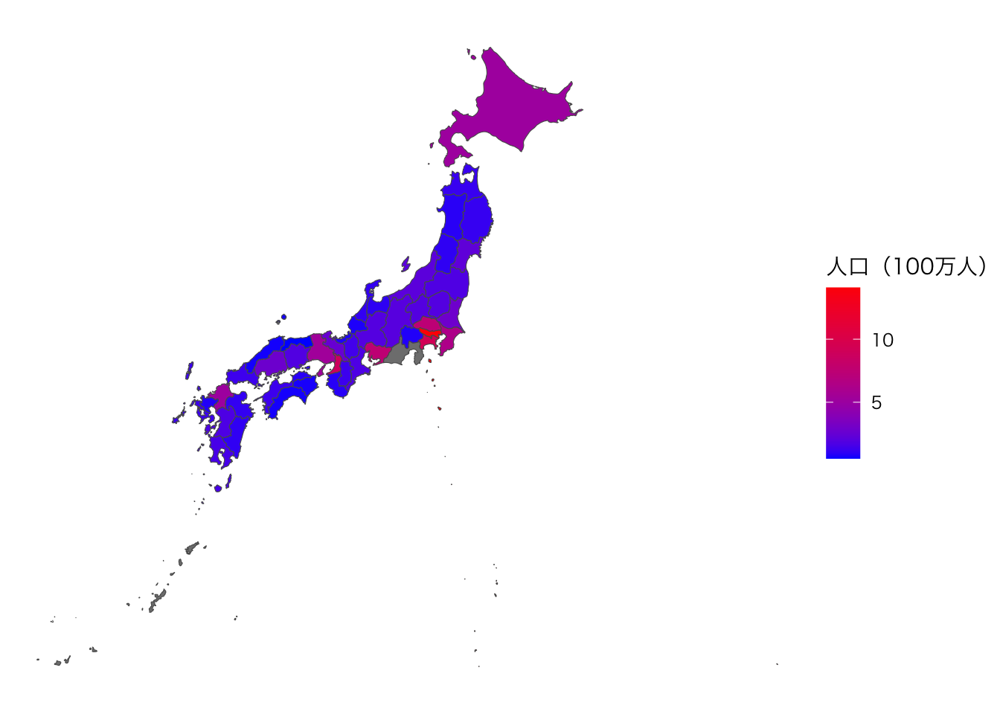
南西諸島・小笠原諸島の位置を変更した地図
- kuniezuパッケージを使用
- CRANにパッケージがないので､以下の方法でインストール（Consoleに入力）
install.packages("remotes")
remotes::install_github("uribo/kuniezu")move_jpn_rs(jgd2011_bbox) %>%
# st_union() %>%
ggplot() +
geom_sf() +
geom_jpsegment() +
theme_map()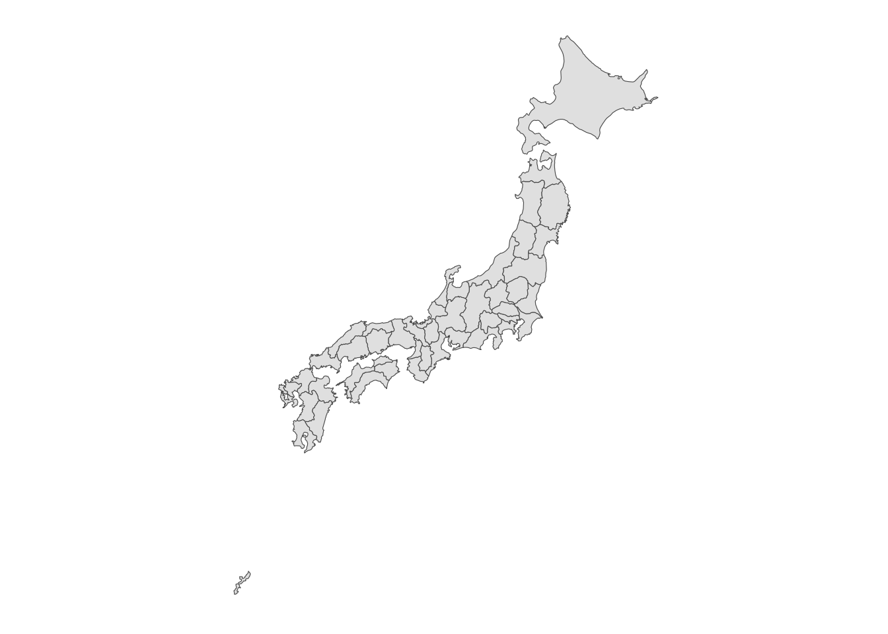
日本地図（都道府県毎に人口で色分け）
df_日本の人口 <-
read_csv("data/日本の人口_2023年10月1日現在.csv") %>%
mutate(
男性 = 男性 * 1000,
女性 = 女性 * 1000,
人口 = 男性 + 女性,
`人口（100万人）` = 人口/1000000
)
df_japan_map_pop <-
df_japan_map %>%
left_join(df_日本の人口, by = c("name_local" = "都道府県"))
df_japan_map_pop %>%
ggplot(aes(fill = 人口), , size = .pt / 10) +
geom_sf() +
scale_fill_continuous_tableau(labels = function(x) x / 1e6,
guide = guide_colorbar(
nbin = 10) # 色の区分を10に設定
) +
labs(fill = "人口 (100万人)") +
theme_void(base_family = "HiraKakuProN-W3")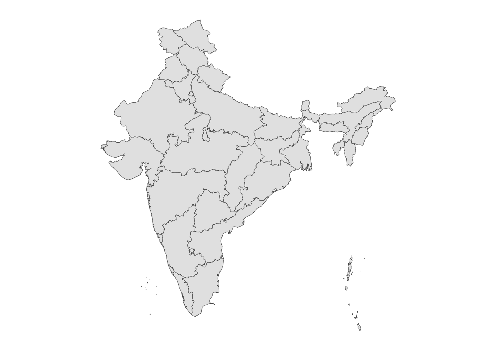
df_japan_map_pop %>%
ggplot(aes(fill = 人口), , size = .pt / 10) +
geom_sf() +
scale_fill_continuous_tableau(labels = function(x) x / 1e6,
guide = guide_colorbar(
nbin = 10) # 色の区分を10に設定
) +
labs(fill = "人口 (100万人)") +
theme_void(base_family = "HiraKakuProN-W3")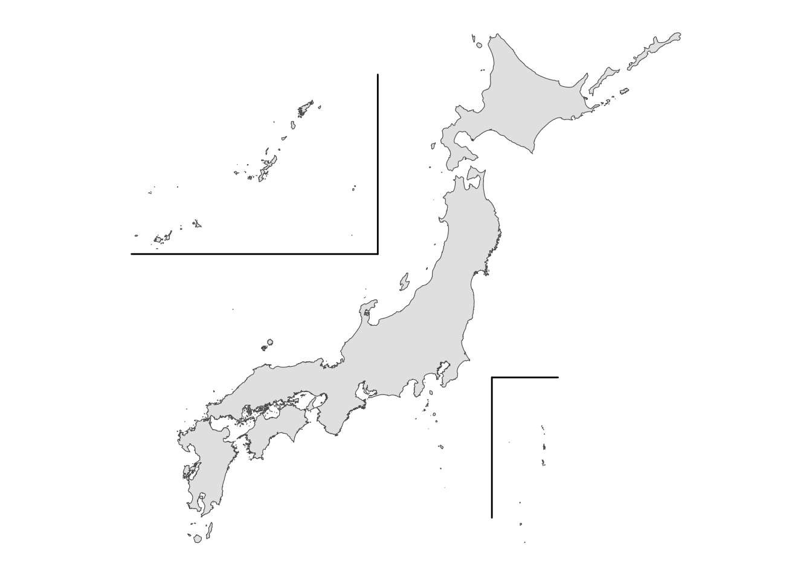
df_日本の人口_long <-
df_日本の人口 %>%
pivot_longer(
cols = c("男性", "女性"),
names_to = "性別",
values_to = "人口_男女別"
)
df_japan_map_pop_long <-
df_japan_map %>%
left_join(df_日本の人口_long, by = c("name_local" = "都道府県"))
df_japan_map_pop_long %>%
ggplot(aes(fill = 人口), , size = .pt / 10) +
geom_sf() +
scale_fill_continuous_tableau(labels = function(x) x / 1e6,
guide = guide_colorbar(
nbin = 10 # 色の区分を5に設定
)
) +
labs(fill = "人口 (100万人)") +
facet_wrap(~ 性別) +
theme_void(base_family = "HiraKakuProN-W3")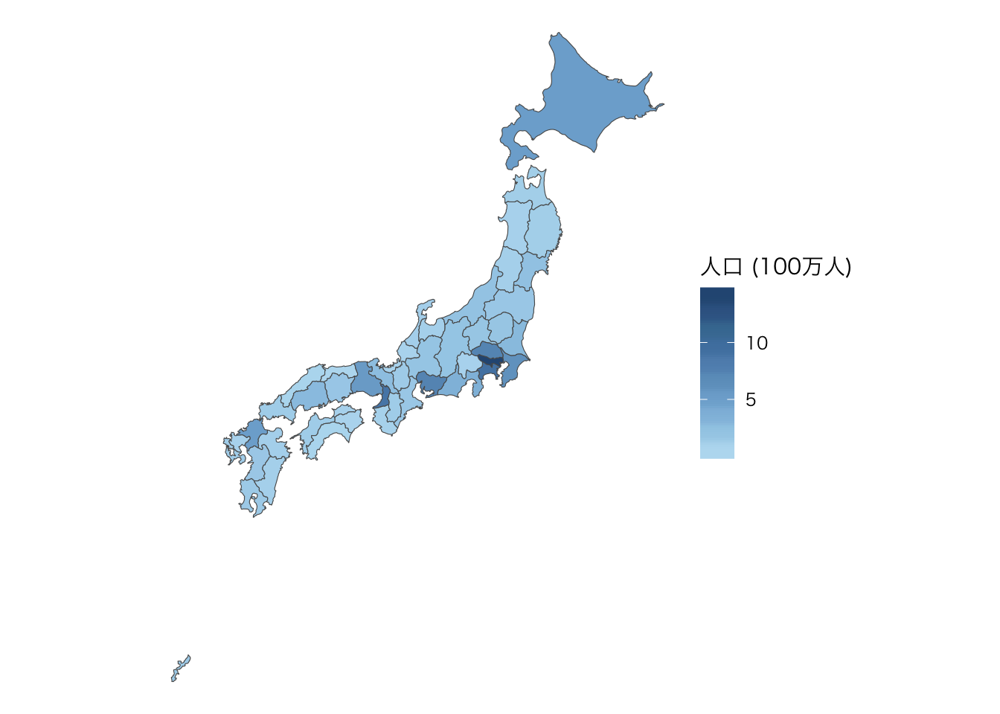
都道府県の抽出
日本地図（石川県）
df_japan_map %>%
filter(name_local == "石川県") %>%
ggplot() +
geom_sf() +
theme_void()日本地図（基礎自治体）
- jpn_pref()関数は基礎自治体の情報を持つ
- メモリ消費量が大きく､動作が不安定なため､コードだけ紹介する
df_japan_map <- 1:47 %>%
map(~ jpn_pref(pref_code = ., district = TRUE)) %>%
reduce(rbind) %>%
ms_simplify(keep = 0.01, keep_shapes = TRUE)
df_japan_map %>%
ggplot() +
geom_sf()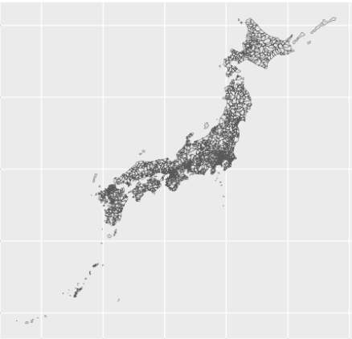
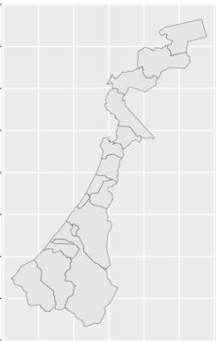
より詳しい説明を必要とする方はデータ分析入門（山本雅資）を参照しましょう
Copyright
苅谷千尋